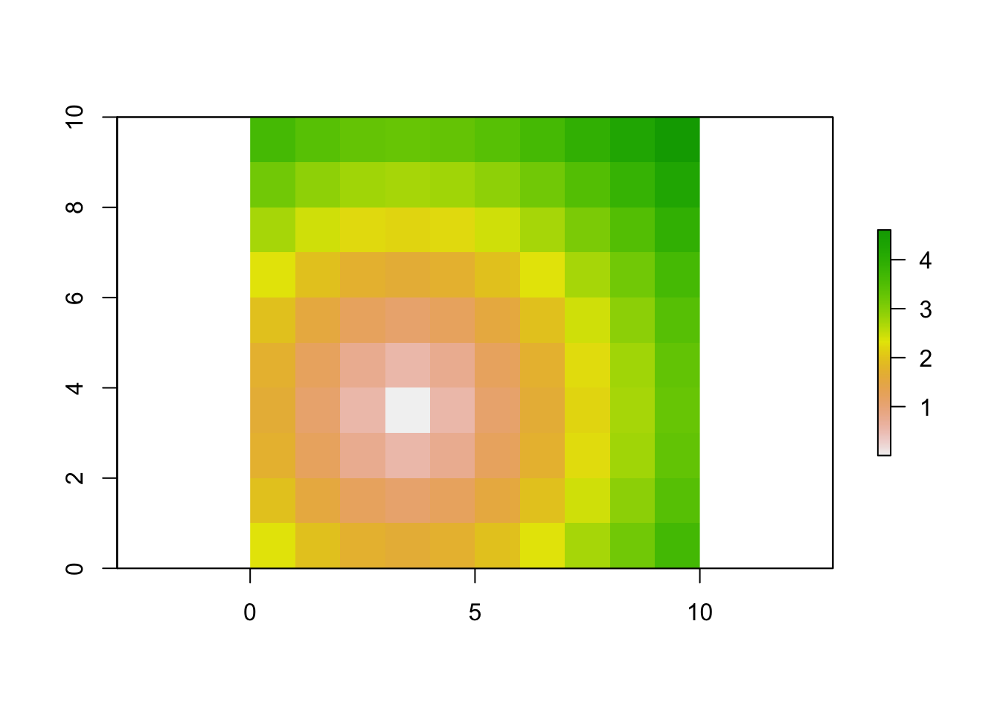
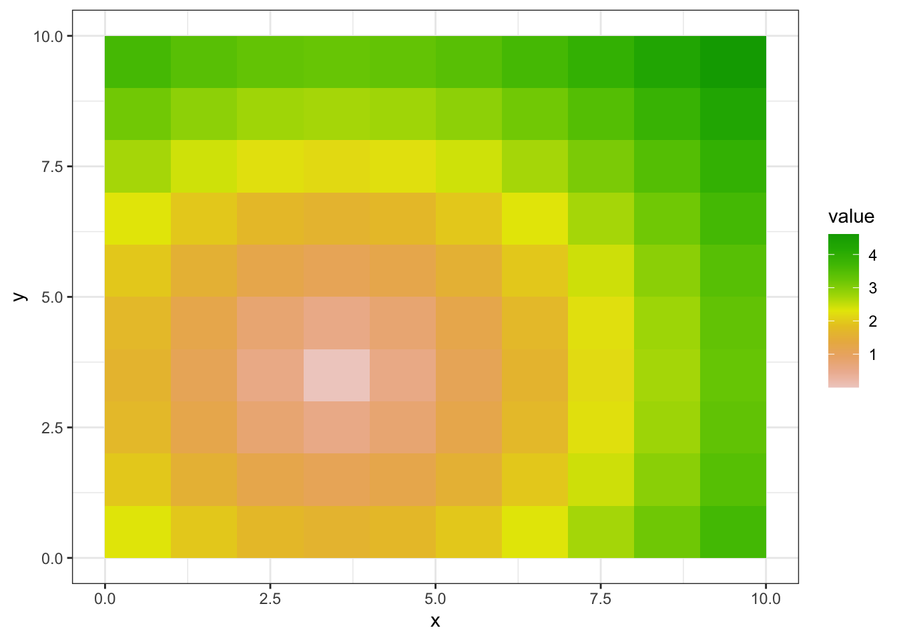
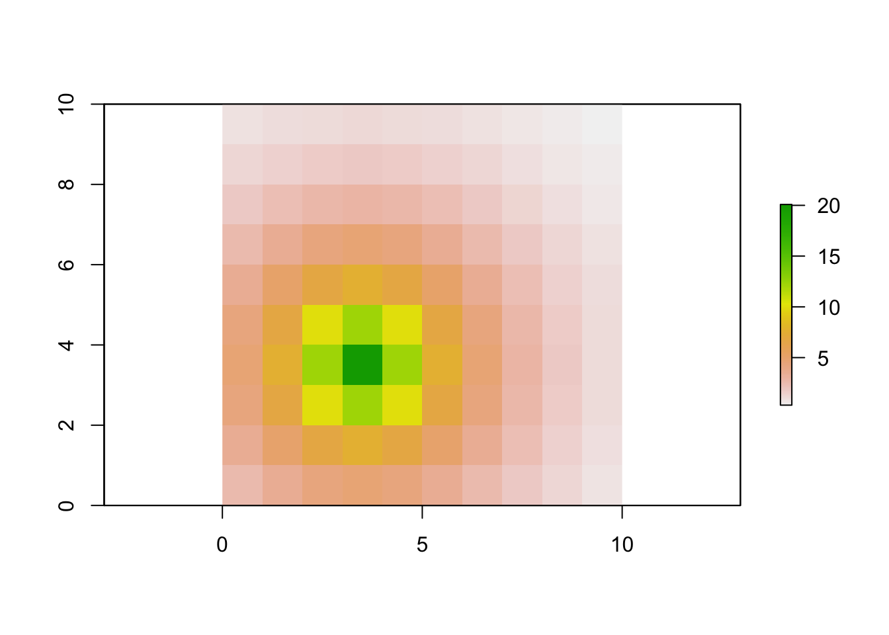
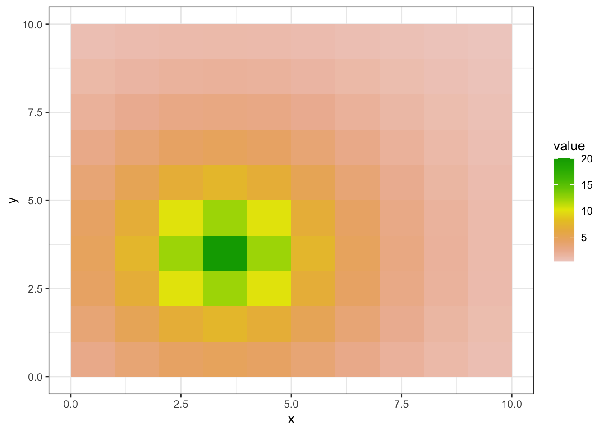
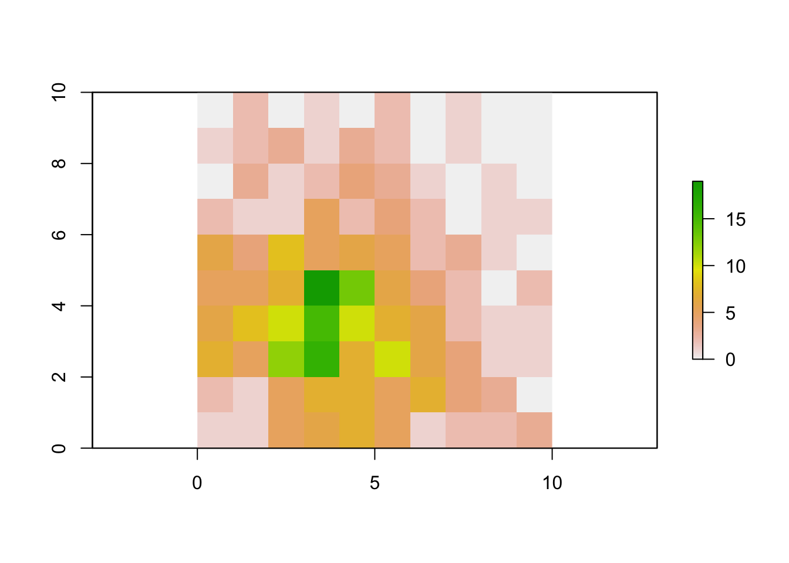
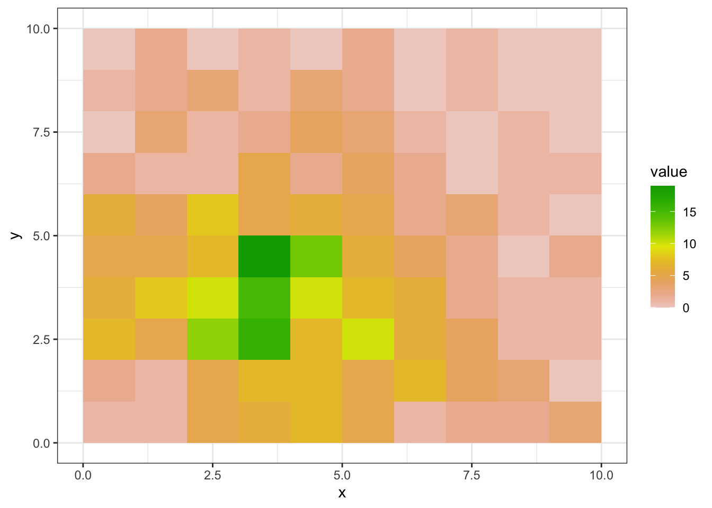
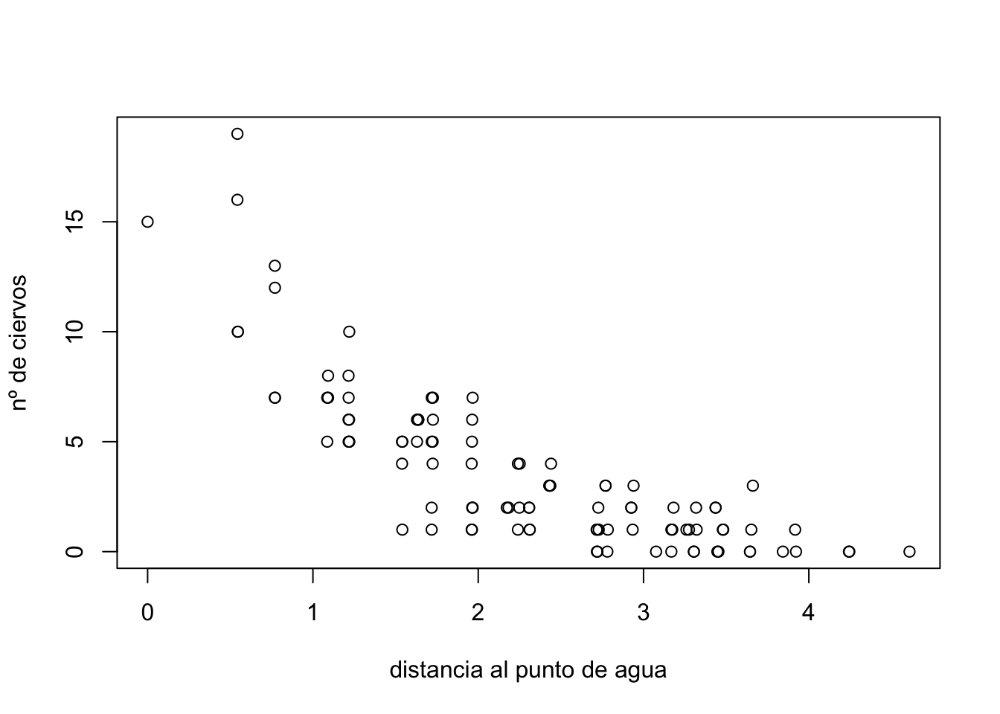
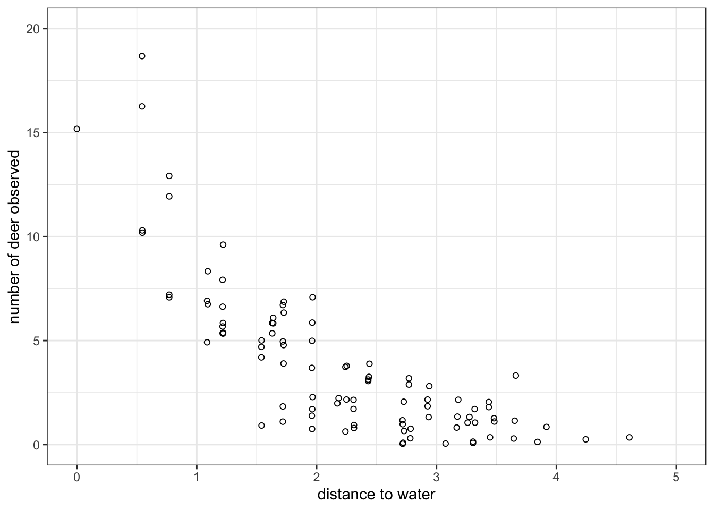

6 Simulation of the study area and sampling WITH covariates
Supongamos ahora que nuestra población de ciervos virtuales se distribuye en un paisaje como el de la siguiente imagen
Now suppose that our population of virtual deer is distributed in a landscape like the one in the following image
 Javier Fernández-López
Javier Fernández-López
Como vemos, hay un punto de agua en la parte inferior izquierda. Vamos a crear una capa raster que indique la distancia al punto de agua, la cual usaremos posteriormente como covariable predictora para distribuir nuestros ciervos.
As we can see, there is a water point in the lower left. We are going to create a raster layer that indicates the distance to the water point, which we will later use as a predictor covariate to distribute our deer.
# Nótese que estamos estandarizando las distancias con scale().
# Para no obtener distancias negativas, le sumaremos 2.28668
# (Note that we are standardizing the distances with scale ().
# In order not to obtain negative distances, we will add 2.28668)
dwat.rasterLayer <-
raster::scale(raster::distanceFromPoints(sarea, c(3.5,3.5))) + 2.28668
# convert the raster to a dataframe for use by ggplot()
gg.raster.df <- cartomisc::gplot_data(dwat.rasterLayer)plot(dwat.rasterLayer)ggplot() +
geom_tile(data = dplyr::filter(gg.raster.df, !is.na(value)),
aes(x = x, y = y, fill=value)) +
scale_fill_gradientn(colors=color.vector) +
theme_bw() +
labs( x = "x", y = "y")

En el ejemplo anterior, habíamos distribuido los ciervos aleatoriamente siguiendo una distribución de Poisson con λ=4 para todo el territorio (Eq 2).
In the previous example, we had randomly distributed the deer following a Poisson distribution with λ = 4 for the entire territory (Eq 2).
\[ N_{i} \sim Poisson(λ) \]
Sin embargo, ahora queremos que nuestros ciervos se distribuyan conforme a la distancia al punto de agua, de tal forma que haya más ciervos cerca del agua, y su abundancia disminuya conforme nos vamos alejando de ella (estamos en una zona árida y durante la época estival el agua escasea, actuando como un atractor de ciervos). Eso quiere decir que λ (abundancia promedio) debe ser alta en aquellas celdas con valores bajos de distancia al agua dwat, e irá disminuyendo con forme aumente dwat. Este comportamiento se puede expresar como
However, now we want our deer to be distributed according to the distance to the water point, in such a way that there are more deer near the water, and their abundance decreases as we move away from it (we are in an arid area and during the summer water is scarce, acting as a deer attractor). This means that λ (average abundance) must be high in those cells with low values of distance to water dwat, and it will decrease as dwat increases. This behavior can be expressed as
\[ log(λ) = \beta_{0} + \beta_{1} * dwat_{i} \]
donde λi es la abundancia promedio en la celda i, β0 es el intercepto del modelo lineal que predice la abundancia, β1 es la “fuerza” del efecto de la distancia al agua sobre la abundancia de ciervos (la fuerza con la que el agua atrae o repele a los ciervos), y dwati es la distancia al punto de agua desde la celda i. Así, podemos intuir que la λ de cada celda dependerá de la variable “distancia al agua.” Por lo tanto, la ecuación general que gobernará la distribución de nuestros ciervos ahora sera:
where λi is the average abundance in cell i, β0 is the intercept of the linear model predicting abundance, β1 is the “force” of the effect of distance to water on deer abundance (the force with which the water attracts or repels deer), and dwati is the distance to the water point from cell i. Thus, we can guess that the λ of each cell will depend on the variable “distance to water.” Therefore, the general equation that will govern the distribution of our deer will now be:
\[ N \sim Poisson(exp(\beta_{0} + \beta_{1} * dwat_{i})) \]
Para que se cumpla nuestra premisa de que haya menos ciervos cuanto más nos alejemos del punto de agua, al coeficiente β1 deberemos darle un valor negativo (el agua atrae a los ciervos). Estos serán nuestros valores:
In order to fulfill our premise that there are fewer deer the further we move from the water point, we must give the coefficient β1 a negative value (water attracts deer). These will be our values:
${0} = 3 $ ${1} = -0.9 $
Calculamos la λ para cada celda siguiendo nuestra fórmula y los valores elegidos para los coeficientes:
We calculate the λ for each cell following our formula and the values chosen for the coefficients:
beta_0 <- 3
beta_1 <- -0.9
lambda.rasterLayer <- exp(beta_0 + beta_1*(dwat.rasterLayer))
# convert the raster to a dataframe for use by ggplot()
gg.raster.df <- cartomisc::gplot_data(lambda.rasterLayer)plot(lambda.rasterLayer)ggplot() +
geom_tile(data = dplyr::filter(gg.raster.df, !is.na(value)),
aes(x = x, y = y, fill=value)) +
scale_fill_gradientn(colors=color.vector) +
theme_bw() +
labs( x = "x", y = "y")

# Creamos un raster de 10x10 celdas vacías
sareaNew <- raster::raster(nrows = 10, ncols = 10, xmn = 0, xmx = 10, ymn = 0, ymx = 10) # study area
# not sure why we need to re-create sarea.....
# Usamos un bucle para rellenar cada celda con el número de ciervos correspondiente según
# el lambda de cada celda
for (i in 1:raster::ncell(sareaNew)){
sareaNew[i] <- rpois(1, lambda.rasterLayer[i])
}
# convert the raster to a dataframe for use by ggplot()
gg.raster.df <- cartomisc::gplot_data(sareaNew)plot(sareaNew)# https://stackoverflow.com/questions/47116217/
# overlay-raster-layer-on-map-in-ggplot2-in-r
ggplot() +
geom_tile(data = gg.raster.df, aes(x = x, y = y, fill=value)) +
scale_fill_gradientn(colors=color.vector) +
theme_bw() +
labs( x = "x", y = "y")

Ya tenemos nuestros ciervos distribuidos. Recapitulando, esta población también se distribuye siguiendo una distribución de Poisson. La diferencia con respecto al ejemplo anterior es que ahora el parámentro λ de esa distribución no es homogéneo para todo el área de estudio, sino que varía con respecto a una covariable o variable predictora, la distancia a un punto de agua en nuestro caso. Esta situación es mucho más realista que la anterior. Podemos ver cual es el número total de individuos de nuestra población, N.
We already have our deer distributed. Recapitulating, this population is also distributed following a Poisson distribution. The difference with respect to the previous example is that now the parameter λ of this distribution is not homogeneous for the entire study area, but varies with respect to a covariate or predictor variable, the distance to a water point in our case. This situation is much more realistic than the previous one. We can see what is the total number of individuals in our population, N.
sum(sareaNew[])## [1] 365Hemos simulado un total de 352 ciervos repartidos por nuestro área de estudio. Este número es el que intentaremos obtener posteriormente cuando ajustemos nuestro modelo. Para comprobar la relación entre la abundancia de ciervos y la distancia al agua, podemos graficar la correlación entre número de individuos en cada celda y la distancia de estas al punto de agua:
We have simulated a total of 352 deer spread across our study area. This number is the one that we will try to obtain later when we adjust our model. To check the relationship between the abundance of deer and the distance to the water, we can graph the correlation between the number of individuals in each cell and their distance to the water point:
plot(dwat.rasterLayer[],sareaNew[], xlab = "distancia al punto de agua", ylab = "nº de ciervos")gg.raster.dwat.df <- cartomisc::gplot_data(dwat.rasterLayer)
gg.raster.sareaNew.df <- cartomisc::gplot_data(sareaNew)
ggplot() +
geom_jitter(aes(gg.raster.dwat.df$value, gg.raster.df$value),
shape = 1, colour = "black") +
xlim(0,5) +
ylim(0,20) +
theme_bw() +
labs( x = "distance to water",
y = "number of deer observed")
